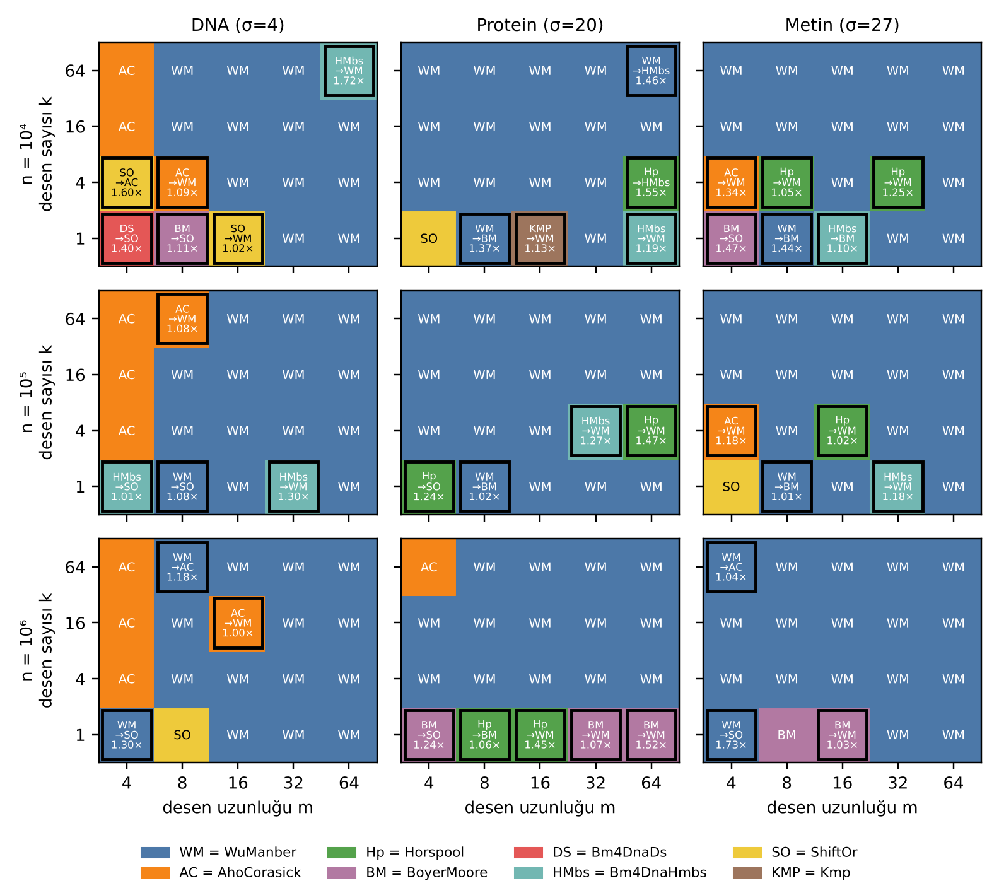
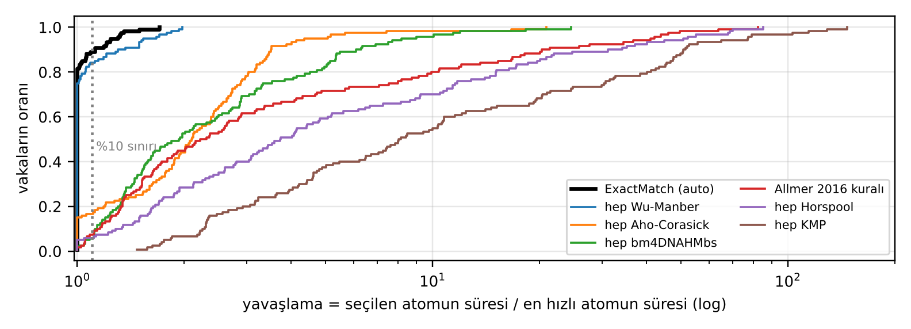

IoS sequence.pattern-match.exact: tam eşleştirme atomları ve girdiye göre seçim yapan ExactMatch molekülü
YZM327 Vize Projesi · {{YAZARLAR}} · Kasım 2026 · Kod: {{REPO}}
Dokuz tam eşleştirme atomu (sekizi seçilebilir) ve bunlar arasından girdinin şekline göre en ucuzunu seçen bir
ExactMatch molekülü yazdık. Seçim, ölçümle kalibre edilmiş bir maliyet modeliyle yapılır.
Kalibrasyonda hiç kullanılmamış 120 vakalık doğrulama kümesinde molekül vakaların %81,7'sinde en hızlı
atomu seçti, %89,2'sinde en hızlının %10 yakınında kaldı; yavaşlamanın geometrik ortalaması 1,031,
toplam süre en iyi seçimlerin 1,017 katı. En iyi sabit politika (hep Wu-Manber) 1,066 ve 1,195'te,
Allmer 2016 kuralı 3,446 ve 8,815'te kaldı. Bütün atomlar 249 testte (420 tohumlu rastgele vaka, lambda genomu,
126 E. coli proteini) referans uygulamayla eleman eleman aynı sonucu verir.
1. Ne yapar ve neden
Problem. Bir veya birçok desenin (ör. DNA motifi, protein parçası) bir dizide geçtiği bütün konumları,
örtüşenler dahil bulmak. Bu işi yapan çok sayıda algoritma var ve hiçbiri her durumda en hızlısı değil: kısa desende
bit paralel Shift-Or, uzun desende atlamalı Boyer-Moore ailesi, çok desende Aho-Corasick ya da Wu-Manber öne çıkar.
Kullanıcının hangisinin daha hızlı olacağını bilmesi beklenemez.
Kapsam ve katkı. IoS'un atom/molekül modeline uygun olarak (1) aynı sözleşmeyi uygulayan sekiz yeni atom
(A grubundan dördü: Horspool, Shift-Or, bm4DNADS, bm4DNAHMbs; B: KMP; C: Aho-Corasick, Wu-Manber; ayrıca Boyer-Moore),
(2) bunlardan birini girdinin şekline bakarak seçen ve kararını açıklayan bir molekül, (3) yeni atom eklendiğinde
molekülü değiştirmeyi gerektirmeyen bir kayıt defteri, (4) seçim yöntemini ölçümle kuran ve görülmemiş veride
sınayan bir deney düzeneği geliştirdik. Allmer'in (2016) iki algoritmasının sözde kodundaki hataları düzelterek
uyguladık (bölüm 2.2).
2. Algoritmalar
Atom
Grup
Fikir
Ön işleme
Arama (ort. / en kötü)
HorspoolSearch
A
Pencerenin son karakterine göre kötü karakter kayması
O(m + σ)
O(n/m) / O(nm)
ShiftOrSearch
A
Bit paralel otomat, m ≤ 32 (32 bitlik sayı)
O(m + σ)
O(n) / O(n)
Bm4DnaDsSearch
A
bm4DNADS: iki kayma tablosu, sentinel, 3 kez açılmış atlama döngüsü
O(m + σ)
O(n/m) / O(nm)
Bm4DnaHmbsSearch
A
bm4DNAHMbs: q-gram özet tablosuyla kayma, yalnızca sonekte durur
O(σq + mq)
O(nq/(m−q)) / O(nm)
KmpSearch
B
Metinde geri gitmeyen önek-sonek (failure) otomatı
O(m)
O(n) / O(n)
AhoCorasickSearch
C
Bütün desenlerin trie'si + failure bağlantıları, tam geçiş tablosu
O(Σm · σ)
O(n + z) / O(n + z)
WuManberSearch
C
En kısa desen boyunda pencere, B karakterlik blok kayması, aday doğrulama
O(σB + Σm)
O(nB/lmin) / O(nΣm)
BoyerMooreSearch
–
Kötü karakter + iyi sonek kuralları (karşılaştırma için)
O(m + σ)
O(n/m) / O(nm)
NaiveSearch
–
Kaba kuvvet; yalnızca test referansı, otomatik seçilmez
–
O(nm)
n metin uzunluğu, m desen uzunluğu, σ alfabe büyüklüğü, z eşleşme sayısı. Tek desenli algoritmalar k desen için
k kez çalışır. Hepsi ortak ExactSearchAtom sınıfından türer (Template Method): parametre denetimi,
yalnızca ASCII harflerde ignoreCase, alfabe küçültme ve çıktı sıralaması tek yerdedir; alt sınıf yalnızca
prepare() ve search() yazar. Atomların içinde indexOf,
includes, RegExp gibi hazır arama işlevi yoktur; bunu kaynak kodu tarayan bir test denetler.
2.1 Allmer 2016 algoritmaları
bm4DNADS kötü karakter tablosu d1'in bir kopyası olan d0'da desenin son karakterinin kaymasını 0 yapar. Atlama
döngüsü d0 ile koşar ve yalnızca pencerenin son karakteri desenin son karakterine eşit olunca durur; 0 değeri, döngünün
üç kez açılmasını mümkün kılar (her turda üç tablo okuması, koşul üç adımda bir). Durunca önce desenin ilk karakteri
(sentinel), tutarsa geri kalanı karşılaştırılır, sonra desen d1'deki geçerli kayma kadar ilerler. Sınır denetimi olmadan
koşabilmek için desen metnin sonuna eklenir. bm4DNAHMbs aynı yapıyı tek karakter yerine pencerenin son q karakterinin
özetiyle kurar (Wu & Manber 1994); yalnızca desenin sonek q-gramının kayması 0'dır, bu yüzden döngüden yalnızca sonek
benzeri bloklarda çıkılır.
2.2 Makaleden ayrıldığımız noktalar
Desende olmayan q-gram için kayma (bm4DNAHMbs). Makale m − w kaydırır. Doğru ve güvenli en büyük kayma
m − q + 1'dir: pencerenin son q karakteri desende hiç yoksa, desenin bu bloğu kapsayan hiçbir hizalaması eşleşemez;
desenin başı bloğun ilk karakterinin hemen sonrasına gelebilir. m − w yanlış sonuç vermez ama her atlamada bir konum kaybeder.
Bir birim testi varsayılan kaymanın m − q + 1 olduğunu, bir mutasyon testi m − q + 2'nin eşleşme kaçırdığını gösterir.
Özet döngüsünün sınırı. Sözde koddaki 0..w kapsayıcı aralık w + 1 karakter okur; tam q karakter kullanıyoruz.
Özet işlevi.değer·128 + kod büyük q'da 32 biti aşar ve UTF-16'da kodlar 128'den büyük
olabilir. Küçültülmüş alfabe tabanında birebir özet kullanıyoruz; tablo 216'yı aşarsa katlıyoruz. Çakışan yerde en
küçük kayma tutulur ve her aday karakter karakter doğrulanır; bu yüzden çakışma yanlış sonuç üretemez (400 harfli alfabe testi).
Sentinel. Metnin kendisi değiştirilmez; metin bir kez n + mmax boyunda tampona kopyalanır, her desen için
yalnızca kuyruk yazılır. Eşleşme sonrası kayma sözde kodda belirsizdir; örtüşen eşleşmeleri kaçırmamak için d1[son karakter] (DS)
ve sonek q-gramının içerideki son geçişi (HMbs) kullanılır.
3. Girdi, çıktı ve parametreler
Girdi FASTA kayıtlarıdır ({ header, seq }), parametreler
{ patterns: string[], ignoreCase: boolean }. Her eşleşme için
{ header, pattern, position, length } üretilir. Konumlar 0 tabanlı ve UTF-16 kod birimi
cinsindendir; örtüşen eşleşmeler raporlanır; sıralama kayıt sırası, konum, sonra desenin listedeki sırasıdır; aynı desen iki
kez verilirse iki kez raporlanır; pattern alanı verildiği gibi yazılır. Desen metinden uzunsa veya metin
boşsa sonuç boştur; boş desen listesi veya boş desen hata verir. Molekülün strategy parametresi
"auto" ya da bir atom adıdır; bilinmeyen ad geçerli seçenekleri listeleyen bir hata verir.
4. Seçim yöntemi
Veri şekli. Molekül ilk kayda bakarak şunları hesaplar: metin uzunluğu n, metnin alfabe büyüklüğü σ, desen sayısı k,
desen uzunluklarının en küçüğü, en büyüğü ve ortalaması. Karar bütün akış için bir kez verilir.
Maliyet modeli. Her atom, veri şeklinden işini anlatan birkaç özellik hesaplar (selection.features);
tahmini süre bu özelliklerin ölçümle bulunan katsayılarla çarpımlarının toplamıdır ve en düşük tahmin seçilir. Kural tabanlı eşikler
yerine bu yolu, yeni atom eklendiğinde molekül değişmeden genişleyebildiği için seçtik: yeni atom kendi özelliklerini getirir,
kalibrasyon onun katsayılarını bulur.
Atom
Asıl özellik (adım sayısı)
Diğer özellikler
Shift-Or, KMP
k · n
prep (ön işleme), text = n (koda çevirme), out = beklenen eşleşme sayısı k·n·σ−m
Ec rastgele metinde kötü karakter kaymasının beklenen değeridir:
Ec(m, σ) = Σd=1..m−1 d·p·(1−p)d−1 + m·(1−p)m−1, p = 1/σ
Eq q-gram kaymasınınkidir: varsayılan kayma D = lmin − q + 1, rastgele bir bloğun desenlerdeki W = k·D blok
konumundan birine denk gelme olasılığı P = 1 − (1 − σ−q)W ile Eq ≈ (1 − P)·D + P·D/2. Shift-Or,
m > 32'de applicable ile kendini uygulanamaz ilan eder; NaiveSearch her zaman uygulanamazdır.
Kalibrasyon. 3 alfabe (DNA, protein, metin) × 3 metin uzunluğu (104, 105, 106) ×
5 desen uzunluğu (4–64) × 4 desen sayısı (1–64) = 180 vakada bütün atomlar ölçüldü (1404 ölçüm). Katsayılar her atom için
göreli hatayı en küçükleyen negatif olmayan en küçük karelerle bulundu (özelliklerin bütün alt kümeleri denenerek
kesin çözüm). Göreli hata, 0,05 ms ve 500 ms'lik vakaları eşit tartar; molekül için önemli olan atomların sırasıdır.
Modelin medyan göreli hatası atoma göre %13,8 (Shift-Or) ile %23,4 (KMP) arasındadır. Karar, ortalama 1,1 ms sürer.
Açıklama.record alanı istenen ve seçilen stratejiyi, veri şeklini, her atomun tahmini
maliyetini (özellikleri ve katsayılarıyla) ya da uygulanamazlık nedenini ve seçimin gerekçesini taşır:
Sözleşme testleri her atoma aynı kuralları uygular: örtüşme ("AAAAA" içinde "AA" → 0,1,2,3), sıralama, tekrar eden
desen, yalnızca ASCII ignoreCase (ı/İ/ç etkilenmez), UTF-16 konumları (emoji), boş metin, uzun desen, hata durumları, determinizm.
Özel durumlar: her atom için 8 ortak (periyodik ABAB, tek karakter, desen alfabesinde olmayan karakterler, iç içe desenler, ikili alfabe…)
ve atoma özgü testler (Shift-Or'da m = 32/33 sınırı, Aho-Corasick'te he/she/his/hers, bm4DNADS'te metin sonu ve sentinel, bm4DNAHMbs'de
m − q + 1 kayması ve tekrarlanan sonek, Wu-Manber'de 1000 desen ve katlanan tablo).
Gerçek veri: lambda faj genomu (NC_001416.1, 48 502 baz; kısa, uzun, 302 desen, ignoreCase) ve 126 E. coli K-12 proteini
(çok kayıtlı akış, kısa ve uzun protein desenleri).
Tohumlu rastgele testler: 420 vaka; DNA, protein, metin, ikili, RNA ve karışık harfli alfabeler, tekrarlı metinler, 1–3 kayıt,
1–40 desen, desen tekrarı, ignoreCase. Her atom ve molekül NaiveSearch ile eleman eleman karşılaştırılır.
Molekül testleri: record alanları, en ucuz tahminin seçilmesi, zorla seçilen her stratejinin aynı sonucu vermesi, test içinde
kayıt defterine eklenen sahte atomun molekül kodu değişmeden seçilmesi, kendini uygulanamaz ilan eden atomun hiç seçilmemesi.
Negatif kontrol: kodun kopyasına 12 bilinçli hata (mutasyon) sokuldu: kaymalarda bir fazla, yanlış eşleşme biti, örtüşmeyi
kaçıran kayma, failure çıktılarının unutulması, sıralamanın kaldırılması, ignoreCase'in bütün harflere uygulanması, en pahalı atomun
seçilmesi. {{MUTATION_SUMMARY}}
Toplam 249 test, bağımlılık kurmadan npm test ile yaklaşık 3 saniyede geçer.
6. Sonuçlar
Ölçüm düzeni. Her ölçümden önce bir ısınma turu atıldı; en az 3 tekrarın medyanı alındı; 15 ms'den kısa işlerde bir tekrar,
en az 15 ms sürecek kadar çalıştırmanın ortalamasıdır. Makine: {{MACHINE}}. Ölçülen süre atomun bütün işidir (ön işleme + arama + çıktı).

Şekil 1. Kalibrasyon ızgarasında her (m, k) hücresinde ölçülen en hızlı atom (renk). Kalın çerçeveli hücrelerde molekül başka bir atom
seçmiştir: "→X 1,30×" seçilen atomu ve en hızlıya göre yavaşlamayı gösterir. Çok desende (k ≥ 4) Wu-Manber, DNA'da m = 4'te Aho-Corasick
baskındır; tek desende kazanan alfabeye ve m'ye göre değişir ve hataların çoğu buradadır.
Doğrulama kümesi. Kalibrasyonda kullanılmayan 120 vaka: farklı tohumlar; n, m, k değerleri ızgara noktalarının arasından
(n: 2·104–7·105, m: 3–150, k: 1–100); vakaların %40'ında desen uzunlukları karışık; altı alfabenin üçü
kalibrasyonda yok (ikili ab, RNA ACGU, 8 harfli). Her vakada bütün atomlar ölçüldü
ve politikalar bu sürelerle karşılaştırıldı. Allmer kuralında m, ortalama desen uzunluğudur.
Politika
En hızlıyı seçme
%10 içinde
Geom. ort. yavaşlama
En kötü
Toplam / en iyi
{{VALIDATION_ROWS}}

Şekil 2. Doğrulama kümesinde her politikanın yavaşlama dağılımı (birikimli). Sola ve yukarı yakın olan iyidir. ExactMatch'in eğrisi
en soldadır ve 1,70'te biter; "hep Wu-Manber" yakındır ama kuyruğu daha uzundur; tek bir atoma bağlı diğer politikalar 10–150 kat yavaşlayabilir.
Alt kümeler. {{SUBSETS}}
Yanlış seçimlerin analizi. Molekül 13 vakada en hızlının %10'undan fazla geride kaldı.
val-3 (ikili alfabe, n = 50 000, k = 48, m = 40): model Aho-Corasick'i 0,506 ms, Wu-Manber'i 0,507 ms tahmin etti, yani iki seçenek
modelde başa baştı; ölçümde Wu-Manber 0,48 ms, Aho-Corasick 0,81 ms sürdü (1,70×). σ = 2 kalibrasyonda yoktu: ikili alfabede Wu-Manber'in
blok boyu büyür ve bloklar desenlerde rastgele metne göre çok daha az geçer, oysa Aho-Corasick'in geçiş tablosu küçük alfabede önbelleğe
sığmasına rağmen bağımlı bellek okumalarıyla yavaştır. Model bu iki etkiyi tahmin aralığının dışında doğru tartamadı.
val-2 (metin, n = 200 000, tek desen, m = 80): model Wu-Manber'i seçti (tahmin 0,62 ms), ölçümde Horspool 0,59 ms, Wu-Manber 0,88 ms sürdü
(1,50×). Izgaradaki en uzun desen 64'tür; σ = 27 ve m = 80'de Horspool neredeyse her adımda m kadar kayar ve döngüsü Wu-Manber'in özet
hesabından ucuzdur; model, tek desenli uzun desenlerde Horspool'un adım başına maliyetini fazla tahmin ediyor (kalibrasyonda tek desenli
vakaların hepsinde katsayılar çok desenli vakalarla birlikte uyduruldu).
7. Sınırlar
Tek desende zayıf. k = 1 vakalarında molekül en hızlıyı yalnızca %64 oranında seçiyor ve bu vakalarda pratikte hep Wu-Manber'i seçiyor.
Tek desenli atomların farkları küçük, model hatası (%14–23) ise bu farklardan büyük.
Rastgele metin varsayımı. Beklenen kayma formülleri metnin σ harften düzgün oluştuğunu varsayar. Gerçek genomlarda harf sıklıkları ve
tekrarlar farklıdır; tekrarlı metinlerde atlamalı algoritmaların kayması düşer, model bunu görmez.
Karar ilk kayda bakar. Kayıtlar çok farklıysa (ilk kayıt kısa, sonrakiler uzun) seçim kötü olabilir. Kararın kendisi O(n)'dir
(ilk kaydın alfabesi sayılır); çok küçük girdilerde 1 ms'lik karar, aramanın kendisinden uzun sürebilir.
Makineye bağlı katsayılar. Katsayılar bir makinede ve Node sürümünde ölçüldü; başka bir makinede npm run calibrate
yeniden çalıştırılmalıdır. Izgara dışı değerlerde (σ < 4, m > 64, k > 64) model dış değerleme yapar.
Allmer algoritmaları JavaScript'te avantajını kaybediyor. Ölçümlerimizde bm4DNADS hiçbir doğrulama vakasında, bm4DNAHMbs yalnızca 2'sinde
en hızlıydı. Makalenin C ortamında kazandıran açılmış döngü ve sentinel, JIT derlemeli dilde Horspool'a göre fark yaratmıyor; sentinel için
metnin kopyalanması ve özet hesabı da ek maliyet getiriyor.
8. Nasıl kullanılır
npm test # 249 test, bağımlılık yok
node bin/ios.js run ExactMatch --patterns ACGT,GGCC < girdi.fasta > cikti.jsonl
node bin/ios.js run ExactMatch --patterns acgt --ignoreCase --strategy KmpSearch < girdi.fasta
node bin/ios.js explain --patterns ACGT,GGCC < girdi.fasta # yalnızca karar (JSON)
npm run calibrate # ızgarayı ölç, src/calibration.js'i yeniden yaz
npm run bench # doğrulama kümesi ve karşılaştırma tablosu
node bench/mutation.js # negatif kontrol
Kodda kullanım: const em = new ExactMatch({ patterns, ignoreCase, strategy: 'auto' }); for (const m of em.run(entries)) …; em.record.
Yeni bir atom src/registry.js'e tek satırla eklenir; molekül değişmez.
Kaynaklar
Aho A. V., Corasick M. J. (1975). Efficient string matching: an aid to bibliographic search. CACM 18(6).
· Allmer J. (2016). Exact pattern matching: Adapting the Boyer-Moore algorithm for DNA searches. PeerJ PrePrints 4:e1758v1, ve çevrimiçi eki (sözde kod).
· Baeza-Yates R., Gonnet G. H. (1992). A new approach to text searching. CACM 35(10).
· Boyer R. S., Moore J. S. (1977). A fast string searching algorithm. CACM 20(10).
· Horspool R. N. (1980). Practical fast searching in strings. Software: Practice and Experience 10(6).
· Hume A., Sunday D. (1991). Fast string searching. Software: Practice and Experience 21(11).
· Knuth D. E., Morris J. H., Pratt V. R. (1977). Fast pattern matching in strings. SIAM J. Comput. 6(2).
· Wu S., Manber U. (1994). A fast algorithm for multi-pattern searching. Tech. Rep. TR-94-17, Univ. of Arizona.
· Veri: NCBI RefSeq NC_001416.1 (lambda faj genomu); UniProtKB/Swiss-Prot, E. coli K-12 (OX=83333).
Ek A. Grup üyelerinin katkıları ve araç kullanımı
{{KATKILAR}}
Yapay zekâ kullanımı. Kodun, testlerin, ölçüm betiklerinin ve bu raporun hazırlanmasında Anthropic'in Claude modeli kullanılmıştır.
Algoritmalar kaynaklardan (yukarıdaki listede) öğrenilmiş; başka bir projeden kod kopyalanmamıştır. Test verileri (lambda genomu, E. coli
proteinleri) herkese açık kaynaklardandır (tests/data/KAYNAK.md).
Ek B. Sınıf diyagramı
Strategy: atomlar ConcreteStrategy, ExactMatch Context. Template Method: ExactSearchAtom.process().
Factory Method + Registry: Registry.create(). Facade: bin/ios.js. Ayrıntı ve SOLID eşlemesi: docs/tasarim.md.
Ek C. Ham sonuçlar
bench/results/calibration.json (1404 ölçüm), coefficients.json (katsayılar ve hata),
validation.json ve validation.md (120 vaka, bütün atomların süreleri, kararlar),
mutation.json (negatif kontrol). Makaleden sapmaların ayrıntılı tablosu: docs/sapmalar.md.